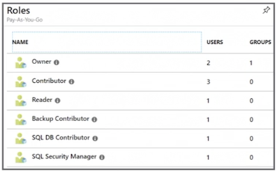
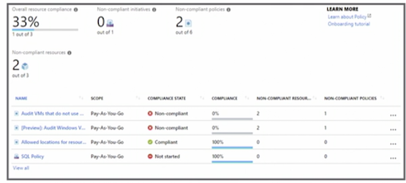
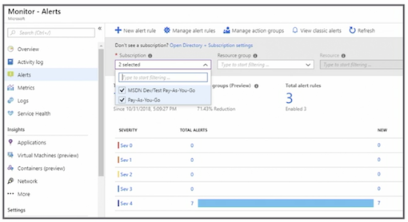

L1 Manage Azure Subscriptions and Resources
1 The new Azure exams and certifications
1-1 Az-103 Azure Administrator

1-2 Exam Question Format
- Technical Scenario
"You're an administor"
- Requirments or Problem Statement
"The virtual machine must"
- Goal Statement
"You must/need ..."
- Question Statement
"What do you need to do"
1-2 Exam Overview
- 40-60 questions
Answer all of the questions, no penalty for guessing
-
180 minutes-150 minutes for the exam
-
Variety of question types
- Performance based and drag and drop
- Case studies
2 Manage Azure subscriptions
2-1 Enterprise level breaking down
- Broken down into departments
- Break departments down by location
- Break departments down by function
departments -> accountts -> subscriptions -> Azure Resources

2-2 Administrator Roles
- Classic (deprecated)
- Azure role-based access control (RBAC)
- Azure Active Directory (AD) (administrative roles)
2-3 Role-based Access Contorl (RBAC)
- 70 built-in roles
- User Access Administrator
- Custom roles

Exam: Should be aware of how to create a custom role
2-4 Top Three RBAC Roles
-
Owner: Full access to all resources
-
Contributor: Cannot delegate access to other users but can create and manage resources
-
Reader: View Azure resources only
2-5 Assign RBAC Administrative Permissions

- Do at the subscription level.
- Select the role (Owner, Contributor, Reader or 70 built-in roles)
- Assign access to Azure AD user, group, or application
- Select user
2-6 User Access Administor
Special account that allows you access to all the Azure resources at the root scope
- Special account
- Privilege at the root scope (
/) - Temporary access only (recommended)
- Azure AD, not subscription

Properties => Access Management for Azure resources
2-7 Configure Cost Center Quotas (Exam)
Subscription level => Usage & Quotas => Current usage of resources
2-8 Resource Tags
- Sort resources based on tag
- Name and value
- Finance: Production;
- Finance: Dev
- Fifteen tags per resource
- Write access is required to apply tags to a resource
2-9 Apply tags using PowerShell by simply using the command line
Color Formatting - HTML
# Apply tags to a Resource without tags
Set-AzureRmResourceGroup -Name RGName -Tag @{ Dept "IT"; Environment "Prod" }
# Remove Tags from a resource group
Set-AzureRmResourceGroup -Tag @{} -Name RGName
2-10 Azure Policies
- Set of rules to ensure compliancy
- Scan resources and provide reporting
- Used to ensure SLAs and corporate policies are met
- Applied to subscriptions and resources

2-11 Azure Policy Assignment Options
-
Policy: Individual polices
-
Initiative: Groups of individual polices
2-12 Three components of policy (Policy & Initiative)
1. Policy and Initiative Definition
Conditions that the policy or initiative will report on and enforce if configured to do so

2.Policy and Initiative Assignment
- Applying the initiative or policy to a scope
- Assignments are inherited by all child resources

3.Policy and Initiative Parameter
- Reduce the number of definitions
- Use generic values
- Example: locations allowed

2-13 Key Points
- Know where to enable the User Access Administrator (Temporary access only (recommended))
- Understand the components of a policy
- Policy: Individual polices
- Initiative: Groups of individual polices
- Policy and Initiative Definition
- Policy and Initiative Assignment
- Policy and Initiative Parameter
- Know how to use tags for reporting
- Fifteen tags per resource
- Be familiar with RBAC and how it is used to control access to Azure resources
3. Analyze resource utilization
3-1 Configure Diagnostic Settings on Resources
-
Diagnostic logs
- Tenant logs
- Resource logs/span>
-
Can be enabled via the resource or in the Azure Monitor
- Data can be
- archived to a
storage account - Streamed to an
event hub - Sent to Log Analytics
- archived to a
3-2 PowerShell
# Archive to a Storage Account
Set-AzureRmDiagnosticSetting -ResourceId [resource id] -StorageAccountId [storage account id] -Enabled $true
# Stream to an Event Hub
Set-AzureRmDiagnosticSetting -ResourceId [resource id] -ServiceBusRuleId [Service Bus rule id] -Enabled $true
# Send to Log Analytics
Set-AzureRmDiagnosticSetting ResourceId [resource id] -WorkspaceId [resource id of the Log workspace] -Enabled $true
3-3 Create Baseline for Resources
-
Dynamic threshold alerts
- Set in the Azure Monitor
- Limited public preview
-
Desired State Configuration (DSC) Ensure that your servers stay within scope
- Portal
- PowerShell
3-4 DSC Configuration Script
configuration IISInstall
{
node "localhost" {
WindowsFeature IIS
{
Ensure = "Present"
Name = "Web-Server"
}
}
}
3-5 Alerts
- Send notification of changes in the environment
- Create alerts for
- Metric values
- Log search queries
- Activity Log events
- Health of the Azure platform
- Website availability
3-6 Alerts rules components
- Target resource — Azure resource
- Signal - metrics, activity log, application insights, or a log
- Criteria - combination of signal and logic

3-7 Analyze Alerts and Metrics Across Subscriptions
- Azure Monitor
- Provide a better unified experience

3-8 Create Action Group (AWS SNS Subscription)

Action Group are used specify:
- Notification preferences
- Triggered by an alert
- Name
- Action type
- Details
3-9 Action Group Types
- Email/SMS/Push/Voice
- SMS / 5minuttes
- Voice / 5minuttes
- Email 100 an hour
- Azure Function
- Logic App
- Webhook
- ITSM
- Automation Runbook
3-10 Report on Spend
-
Cost management and billing (preview)
- Organization billing and individual billing
-
Cost analysis
- Filter costs by subscription, resource, date, or tag Download Usage
Report.csv
- Filter costs by subscription, resource, date, or tag Download Usage
-
Invoices
- Download invoices and view costs by service
3-11 Azure Advisor
- Identifies idle and underutilized resources
- Resizes or shuts down underutilized virtual machines
- Eliminates ExpressRoute circuits with a status of Not Provisioned for more than one month
3-12 Utilize Log Search Query Functions
- Azure Monitor
- Provide insights based on the data
3-13 Key Points
- Know how to create a log search query
- Know how to create an alert
- Know how to create an action group
- Understand how often notifications are sent to an action group
4 Manage resource groups
4-1 Create Action Group
- Resource policies can be applied to the resource group
- Policy then only applies to the resource group, not the entire subscription

4-2 Resouce Lock
- Controls access
- Prevents accidental deletion or modification of resources
- The lock can be applied:
- Subscription
- Resource group
- Resource
4-3 Types of Locks
CanNotDelete
Read and modify but not delete a resource
ReadOnly
Read but not modify, delete, or update a resource Can lead to unexpected results
When you use a ReadOnly lock, it can lead to unexpected results when applied to some resources because the resource itself may need additional actions to function.
4-4 Lock Hierarchy
-
Parent-child relationship
- Locks applied at the parent scope affect all resources within that scope
- Most restrictive lock takes precedence
4-5 Permissions Required to Apply a Lock
Microsoft.Authorization/*MicrosoftAuthorization/locks/*- Owner
- User Access Administrator
4-6 Locks Using PowerShell
# Lock a Resource Group
New-AzureRmResourceLock -LockName NoDelete -LockLevel CanNotDelete -LockNotes "Can not Delete Resources" -ResourceGroupName 'AZ-100'
# View All Locks in Subscription and Resource Group
Get-AzureRmResourceLock
Get-AzureRmResourceLock -ResourceGroupName 'AZ-100'
# Delete a Lock
Remove-AzureRmResourceLock -LockName NoDelete -ResourceGroupName 'AZ-100'
4-7 Moving Resource to Another Resource Group
- The location of the resource does not change
- Not all resources can be moved
- Resources are locked during the move

4-8 Moving Resource to Another Subscription
- Must exist in the same Azure Active Directory tenant (transfer ownership or add a new Azure subscription)
- Resource provider must be registered for the destination subscription
- Check to ensure you will not exceed subscription quotas

4-9 Permissions Required to Move Resources
- Source resource group
Microsoft.Resources/subscriptions/resourceGroups/moveResources/action
- Destination resource group
Microsoft.Resources/subscriptions/resourceGroups/write
4-10 Move Resources to Resource Group
# Move Resources to Another Resource Group
Move-AzureRmResource -DestinationResourceGroupName "NewRGPS" - ResourceId "/subscriptions/81XXXXXXX/resourceGroups/MARGPS/ providers/Microsoft.Network/virtualNetworks/az100vnet"
4-11 Remove Resource Group
- Removes all resources in the resource group
- Some resources need to be manually removed before the resource group can be deleted

**4-12 Remove Using PowerShell **
#Remove a Resource Group
Remove-AzureRmResourceGroup -Name ResourceGroup
4-13 Key Points
- Azure policies can be applied to the resource group level instead of the subscription level
- Policy then only applies to the resource group, not the entire subscription
- Know the permissions required to move a resource group
- Understand the relationship between resources when applying locks
- Know that applying a read-only lock may have unforeseen consequences
5 Manage role-based access control
5-1 RBAC Role
- Azure Active Directory(top level).
-
Azure Active Directory manage Users and Groups and assign our Azure Administrative Roles.
-
RBAC Roles(subscription level)
- Each subscription contains Resource Groups and Resources.
- Your RBAC Roles can be assigned to any of those levels.

5-2 Azure AD Admin Roles vs. RBAC (difference)
- RBAC roles provide access management to Azure resources
- Azure AD roles used to manage Azure AD resources
- Manage users
- Assign admin roles
- Reset passwords
- Manage licenses
- Manage domains
5-3 Type of RBAC Roles
- Owner
- Contributor
- Reader
- User Access Administrator
- Built-in roles
- Custom roles

5-4 RBAC Required Permissions
- Microsoft.Authorization/roleAssignments/write
- Microsoft.Authorization/roleAssignments/delete
- User Access
- Administrator Owner
5-5 Before Assigning Access
- Who needs access to the resource?
- What permissions do they really need?
- What resource does access need to be granted to?
5-6 RBAC Role Assignments
-
Security principal
- Who or what needs access
-
Role definition
- Collection of permissions
-
Scope
- Boundary of the access
- What resource is this going to apply to
5-7 Security Principal (Who or what needs access)
- User
- Group
- Service principal
- Identity for an application
- Managed identity
- Cloud apps that need to authenticate to Azure AD
5-8 Role definition (permissions)
- Actions
- Not actions

5-9 Scope
- Management group
- Subscription
- Resource group
- Resource
- Parent-child relationship — Roles are inherited

5-10 Putting it together